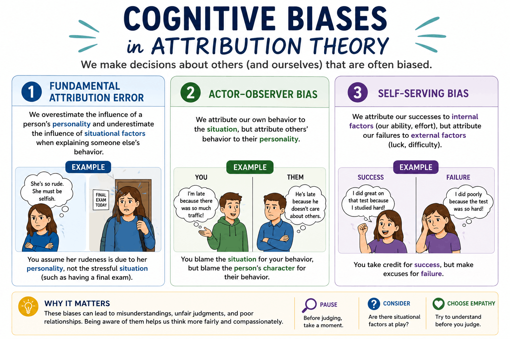

The Big Picture: Welcome to Unit 4
In our previous unit, we looked extensively at how human beings learn individually through behaviors and cognition. Now, we are shifting our focus to the larger world around us. Social psychology is the study of how other people and groups influence behavior and mental processes, as well as how behavior and mental processes influence an individual's experiences in social situations. This unit explores how external social factors and internal personality variables come into play in a wide variety of everyday situations for people. We begin by examining how we judge the people around us, and how those assumptions shape our reality.
1.Attribution Theory: Why Did They Do That?
Humans are natural detectives. When we see someone act a certain way, we immediately try to figure out why. Attributions are how people explain behavior and mental processes of themselves and others. Broadly speaking, there are two main ways we can categorize these explanations:
- Dispositional Attributions
- These relate to the internal qualities of others, such as intelligence or personality. Example: If your classmate trips in the hallway, you might think, "Wow, they are so clumsy."
- Situational Attributions
- These relate to external circumstances that are experienced. Example: If your classmate trips, you might instead think, "The janitor must have mopped the floor and left it slippery."
Explanatory Style
Over time, people demonstrate a predictable pattern of attributions called explanatory style. Explanatory style is how people explain good and bad events in their lives and in the lives of others. This style can generally be divided into two camps:
- Optimistic Explanatory Style
- Viewing negative events as temporary, specific, and external, while viewing positive events as stable and personal. Example: "I failed this math test because the room was loud, but I'm still a smart student who will ace the next one."
- Pessimistic Explanatory Style
- Viewing negative events as permanent, widespread, and internal. Example: "I failed this math test because I am inherently bad at school, and I will always be a failure."
2.Locus of Control
Closely tied to our explanatory style is our locus of control, which represents how much influence we believe we have over the events in our lives.
- Internal Locus of Control
- The belief that one's own actions, choices, and efforts are the primary causes of life outcomes. Example: "If I study hard and go to practice, I will make the varsity team."
- External Locus of Control
- The belief that outcomes are determined by outside forces such as luck, fate, or other people, rather than one's own actions. Example: "It doesn't matter how hard I practice; the coach already has his favorites."
3.Cognitive Biases in Attribution
Because we have to make snap judgments constantly, our brains rely on shortcuts. Unfortunately, people are subject to biases in their attributions. These cognitive blind spots can heavily affect our behavior and mental processes:
- Fundamental Attribution Error
- The tendency to overestimate the influence of personal traits and underestimate situational factors when explaining other people's behavior. Example: When someone cuts you off in traffic, you assume they are a terrible, selfish person (dispositional), ignoring the possibility that they might be rushing to the hospital for an emergency (situational).
- Actor-Observer Bias
- A social perception error in which people attribute their own behavior to situational factors but attribute others' behavior to internal traits or dispositions. Example: When you do poorly on a project, it's because the teacher gave bad instructions. When your partner does poorly, it's because they are lazy.
- Self-Serving Bias
- The tendency to attribute successes to internal factors (such as ability or effort) and failures to external factors (such as luck or circumstances) to protect self-esteem. Example: A quarterback wins the game and praises his own incredible arm strength. The next week he loses and blames the referees.

4.Person Perception
Beyond assigning blame or praise, Person Perception involves forming impressions and making judgments about other people based on their appearance, behavior, and available information. This perception applies to behavior and mental processes in several fascinating ways:
- The Mere Exposure Effect
- People's perception of how much they like something can be influenced by the mere exposure effect. This occurs when people are exposed to a stimulus repeatedly over time, which causes them to like the stimulus more. Example: You hate a new song on the radio at first, but after hearing it play in the background for a month, you catch yourself happily singing along.
- Self-Fulfilling Prophecy
- People can behave in ways that elicit behaviors from others that confirm their beliefs or perceptions about themselves or others. Example: A teacher believes a student is highly gifted, so they give that student extra attention and harder challenges. The student thrives under the attention, proving the teacher "right."
- Social Comparison
- A type of person perception that occurs when people evaluate themselves based on comparisons to other members of society or social circles. Social comparison can be upward (comparing yourself to someone better off, which can motivate you or make you feel inadequate) or downward (comparing yourself to someone worse off to boost your self-esteem).
- Relative Deprivation
- People often judge their own sense of deprivation relative to others. Example: You might be thrilled with your 5% raise at work until you find out your coworker received a 10% raise. Suddenly, you feel cheated, even though your actual financial situation improved.
5.Don't Trip Up! (Common Misconceptions)
⚠️ Fundamental Attribution Error vs. Actor-Observer Bias: Students frequently confuse these two concepts on the exam. Remember: The Fundamental Attribution Error is strictly about how you judge others. The Actor-Observer bias is a comparison of how you judge yourself (the actor) versus how you judge someone else (the observer) in a similar situation.
6.Key Terms in This Topic
7.Practice This Topic
Test yourself on exactly what you just read. The numbers on each button show how much material is waiting for you.
The same self-check questions that close your guided notes. Find out whether attribution and person perception stuck.
Start Quick Check →Flip through the key terms from this topic, including the fundamental attribution error, actor-observer bias, and locus of control.
Open the deck →AP-style multiple choice on attributions, cognitive biases, and person perception, with an explanation after every answer.
Take the quiz →